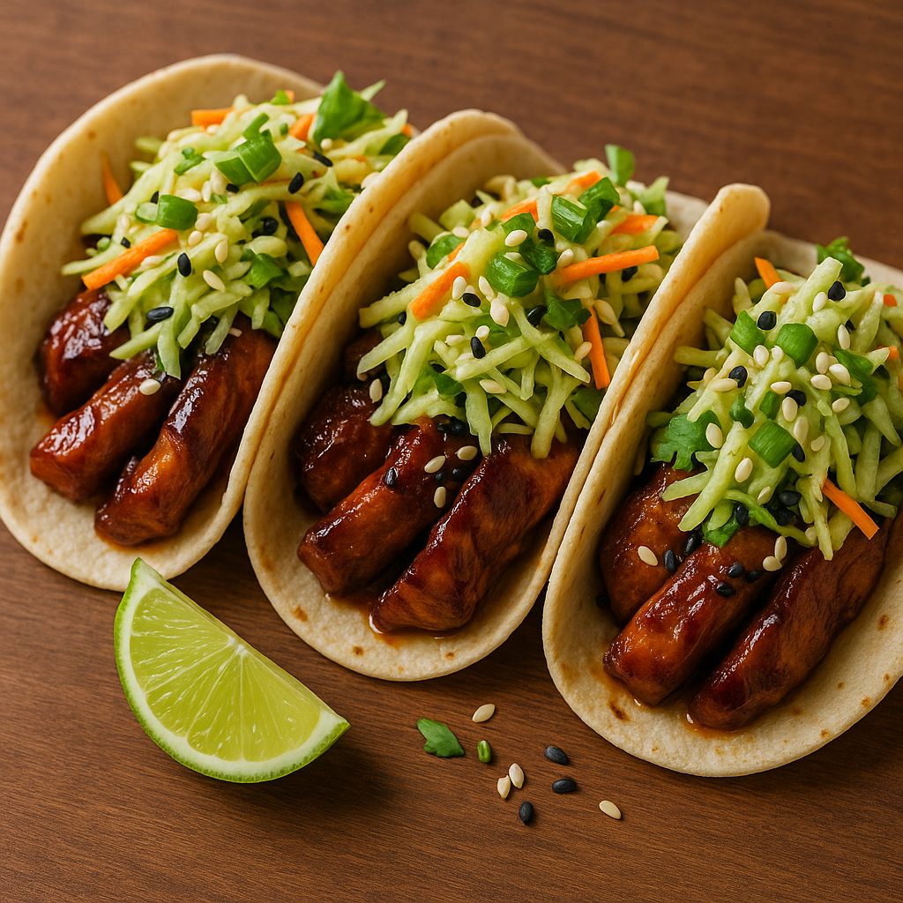

Teriyaki Chicken Tacos with Wasabi Slaw
Soft corn tortillas filled with juicy teriyaki chicken, topped with a refreshing wasabi-lime slaw and sesame seeds. It’s a vibrant East-meets-West street food mashup.
For the Teriyaki Chicken
- 500 g boneless chicken thighs, cut into strips
- ¼ cup soy sauce
- 2 tbsp mirin (or honey as a substitute)
- 2 tbsp sake (or rice vinegar if non-alcoholic)
- 2 tbsp brown sugar
- 1 clove garlic, minced
- 1 tsp fresh ginger, grated
- 1 tbsp sesame oil
For the Wasabi Slaw
- 2 cups shredded cabbage (mix red & green)
- 1 carrot, julienned
- 3 tbsp mayonnaise
- 1 tsp wasabi paste (adjust to heat preference)
- Juice of 1 lime
- ½ tsp salt
For Assembly
- 8 small corn tortillas
- 1 tbsp sesame seeds, toasted
- 2 spring onions, chopped
- Fresh coriander (optional)
How To Prepare:
-
Make the Teriyaki Chicken
- In a small bowl, mix soy sauce, mirin, sake, sugar, garlic, and ginger.
- Heat sesame oil in a pan, add chicken strips, and cook until golden brown.
- Pour in the teriyaki sauce mixture, simmer until thick and glossy.
-
Prepare the Wasabi Slaw
- Mix mayo, wasabi, lime juice, and salt in a bowl.
- Toss with cabbage and carrots until evenly coated.
-
Assemble the Tacos
- Warm tortillas on a skillet.
- Fill each tortilla with teriyaki chicken.
- Top with wasabi slaw, spring onions, sesame seeds, and coriander.
-
Serve
- Enjoy immediately with extra lime wedges.